Apache Kafka · 核心原理图谱
分布式事件流平台:分区 append-only 日志 + 副本 ISR 复制,顺序写磁盘 + 零拷贝高吞吐,消费者组按位点拉取。Producer 发送路径 · 攒批+分区+acks
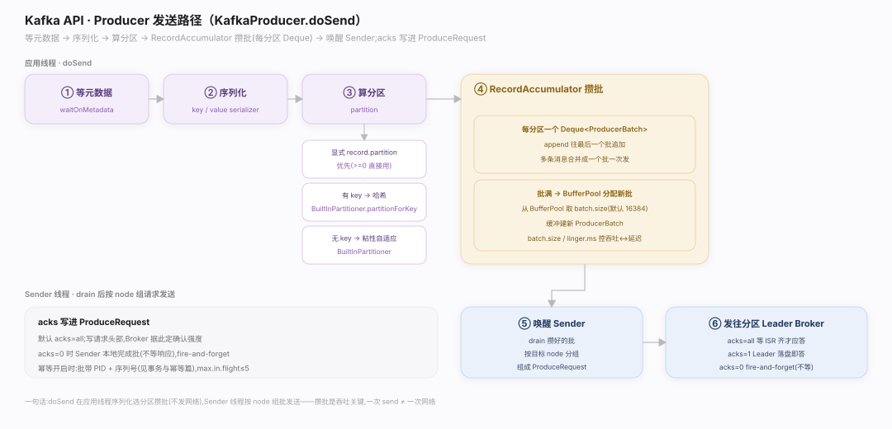
Consumer 消费路径 · poll+fetch+提交
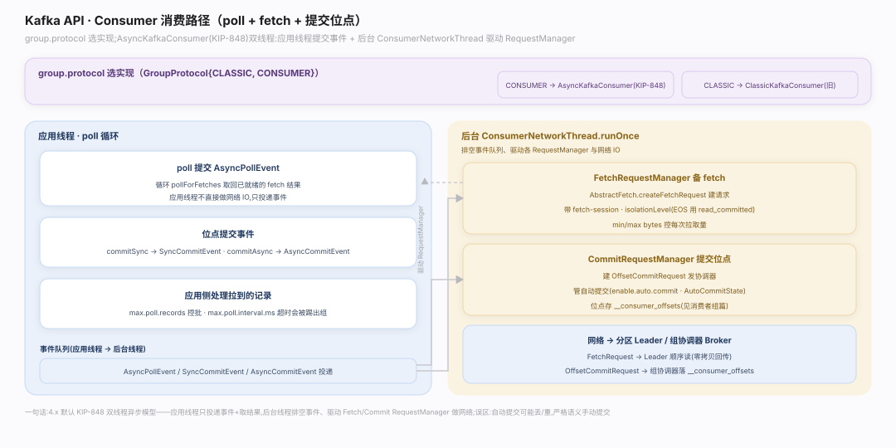
投递语义 · 至少一次/精确一次
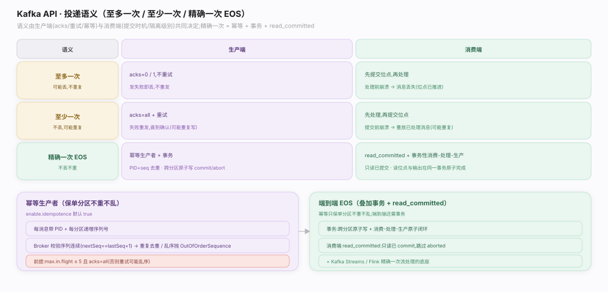
要点 · 定位 / 总纲 / 调优 / 误区 / 深化
定位属"接触面主线"(用户可见)。Kafka 的接触面是生产/消费 API(非 SQL、非文件系统):Producer 攒批发送、Consumer 拉取消费提交位点、投递语义(至少一次/精确一次)。调用【日志存储】追加/读取、依赖【副本与 ISR】的 acks、【消费者组与协调】管 rebalance。源码基准 Kafka 4.4.0-SNAPSHOT(
clients/.../producer/、clients/.../consumer/)。Kafka 接触面是生产/消费 API:Producer 的 doSend 序列化→选分区(显式/key哈希/粘性自适应)→RecordAccumulator 每分区攒批(batch.size/linger.ms)→Sender 按 node 组发,acks 定确认强度;Consumer(4.x 默认 KIP-848 双线程异步模型)poll 循环拉取、按 isolationLevel 读、经 CommitRequestManager 提交位点;投递语义从至多一次到精确一次,幂等生产者(默认开,PID+序列号,Broker 校验连续去重)保单分区不重不乱,端到端 EOS 再叠事务+read_committed。
调优要点 · 关键开关
- batch.size / linger.ms:攒批大小与等待;调大提吞吐、增延迟。
- acks / enable.idempotence:不丢+不重用 acks=all + 幂等(默认开)。
- max.in.flight.requests.per.connection:幂等下 ≤5 保序;否则重试可能乱序。
- max.poll.records / max.poll.interval.ms:消费批大小与处理超时;处理慢调大 interval 防被踢。
- enable.auto.commit:精确控制位点则关自动提交、手动 commit。
常见误区 · 工程要点
- 误区:一条 send 一次网络。 攒批:多条合并成 ProducerBatch 一次发,batch.size/linger.ms 控制。
- 误区:消费者读完消息就删。 消费只推进位点,数据按 retention 淘汰;可重置位点重读。
- 误区:精确一次只靠幂等生产者。 幂等只保单分区不重不乱;端到端 EOS 还需事务 + read_committed 消费。
- 误区:自动提交安全。 自动提交可能在处理前就提交(丢)或处理后未提交(重);严格语义要手动提交。
- 归属提醒:追加/读取的日志在【日志存储】;acks 等 ISR 确认在【副本与 ISR】;rebalance/位点存储在【消费者组与协调】;PID/事务在【事务与幂等】。
深化 · 对比速查
| 语义 | 生产端 | 消费端 |
|---|---|---|
| 至多一次 | acks=0/1,不重试 | 先提交位点再处理 |
| 至少一次 | acks=all + 重试 | 先处理再提交位点(可能重复) |
| 精确一次(EOS) | 幂等生产者 + 事务 | read_committed + 事务性消费-处理-生产 |
| 结构 | 定义 | 职责 |
|---|---|---|
| KafkaProducer.doSend | producer/KafkaProducer.java:1127 | 序列化→分区→攒批→唤醒 Sender |
| RecordAccumulator | producer/internals/RecordAccumulator.java:308 | 每分区攒批 |
| BuiltInPartitioner | producer/internals/BuiltInPartitioner.java:74 | 粘性/自适应分区 |
| AsyncKafkaConsumer | consumer/internals/AsyncKafkaConsumer.java:933 | KIP-848 双线程消费者 |
| FetchRequestManager | consumer/internals/FetchRequestManager.java:105 | 备 fetch 请求 |
| CommitRequestManager | consumer/internals/CommitRequestManager.java:76 | 位点提交/自动提交 |
层级 · Topic→Partition→Log→Segment
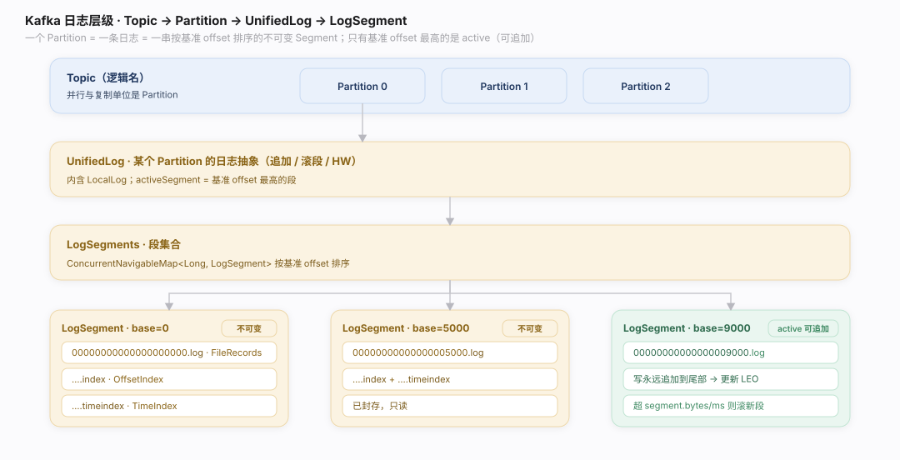
Segment 磁盘格式 · 稀疏索引
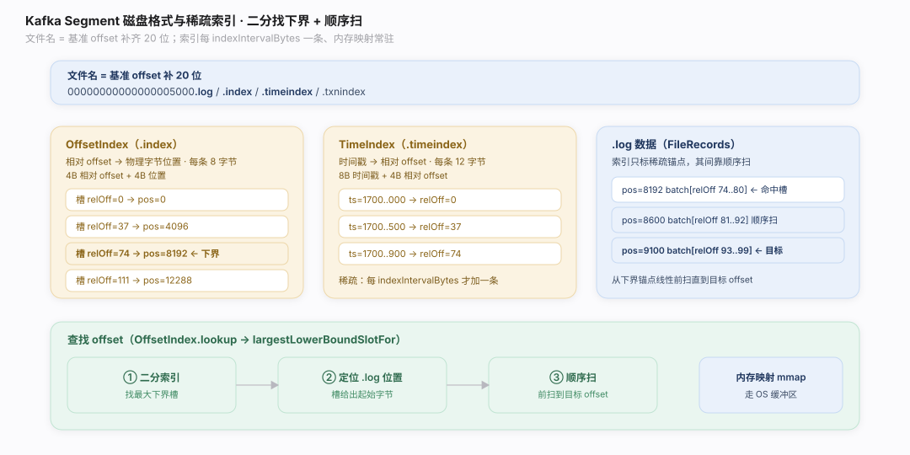
记录批 · magic v2 + 追加路径
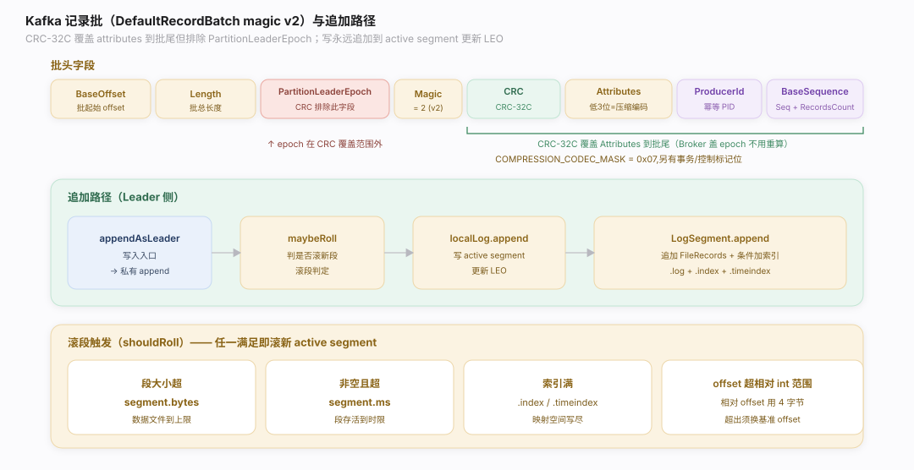
清理 · retention 删除 vs compaction 压缩
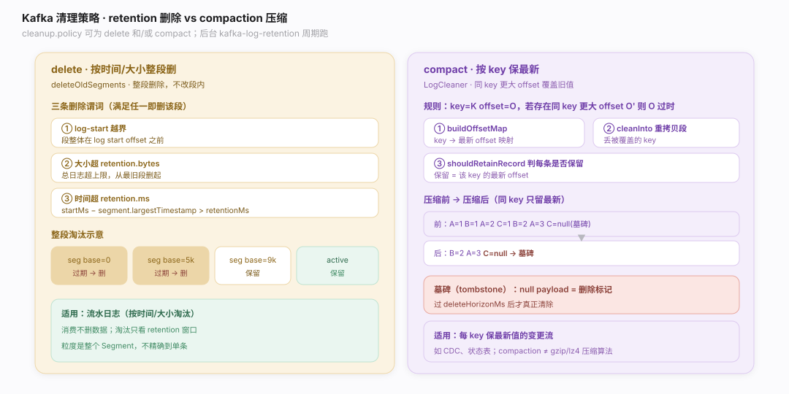
页缓存 + 零拷贝 sendfile
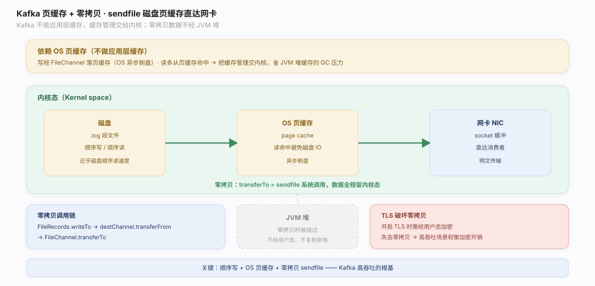
要点 · 定位 / 总纲 / 调优 / 误区 / 深化
定位属"存储能力域"——Kafka 的核心。管数据的物理组织:Topic→Partition→Log→LogSegment 的追加日志、稀疏索引、记录批格式、retention 与 compaction、页缓存与零拷贝。被【生产/消费 API】追加与读取、被【副本与 ISR】复制。源码基准 Kafka 4.4.0-SNAPSHOT(
storage/src/main/java/org/apache/kafka/storage/internals/log/)。Kafka 的一切是分区的追加日志:Topic→Partition→UnifiedLog→按基准 offset 排序的不可变 LogSegment(.log 数据 + .index/.timeindex 稀疏索引,每 indexIntervalBytes 一条、内存映射),写永远追加到 active segment(超 segment.bytes/ms 滚新段)、记录批是 magic v2 带 CRC-32C;清理分 delete(按 retention.ms/bytes 整段删)与 compact(LogCleaner 按 key 保最新、null=墓碑);高吞吐靠顺序写 + OS 页缓存 + 零拷贝 sendfile(明文时数据磁盘直达网卡不经 JVM 堆)。
调优要点 · 关键开关
- segment.bytes / segment.ms:段大小/时长;太小段多元数据重,太大 retention 粒度粗。
- retention.ms / retention.bytes:delete 策略的保留窗口。
- cleanup.policy:流水日志用 delete;每 key 保最新用 compact(可叠加)。
- index.interval.bytes:稀疏索引密度;密则查快占内存,疏则反之。
- 注意 TLS 破坏零拷贝:高吞吐场景权衡加密开销。
常见误区 · 工程要点
- 误区:Kafka 是消息队列(读完即删)。 不。它是保留日志,消费不删数据;按 retention/compaction 淘汰,同数据可多消费者多次读。
- 误区:offset 是数组下标随机访问。 offset 是日志逻辑地址,靠稀疏索引二分定位 + 顺序扫,不是 O(1) 随机读。
- 误区:压缩(compaction)= 压缩算法。 这里 compaction 指"每 key 保最新值"的日志压实;压缩算法(gzip/lz4/zstd)是记录批的 attributes 位,两回事。
- 误区:Kafka 靠 fsync 保证不丢。 主要靠副本复制(ISR)+ 页缓存,不强依赖每写 fsync;不丢语义见副本篇。
- 归属提醒:日志被【副本与 ISR】复制;produce/consume 入口在【生产/消费 API】;HW 推进逻辑在【副本与 ISR】;幂等的 PID/seq 校验在【事务与幂等】。
深化 · 对比速查
| 结构 | 定义 | 职责 |
|---|---|---|
| UnifiedLog | storage/.../log/UnifiedLog.java:128 | 分区日志抽象(追加/滚段/HW) |
| LogSegments | storage/.../log/LogSegments.java:42 | 按基准 offset 排序的段集 |
| LogSegment | storage/.../log/LogSegment.java:66 | .log + .index + .timeindex |
| OffsetIndex / TimeIndex | storage/.../log/OffsetIndex.java:56 | 稀疏索引(8B / 12B 每条) |
| DefaultRecordBatch | clients/.../record/internal/DefaultRecordBatch.java:46 | magic v2 记录批(CRC-32C) |
| LogCleaner | storage/.../log/LogCleaner.java:49 | key 级 compaction |
| FileRecords | clients/.../record/internal/FileRecords.java:291 | 零拷贝读(sendfile) |
Leader/Follower 复制
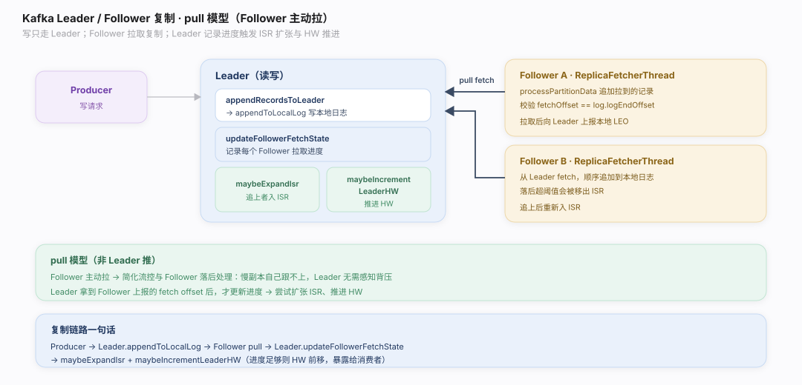
ISR 与高水位 HW
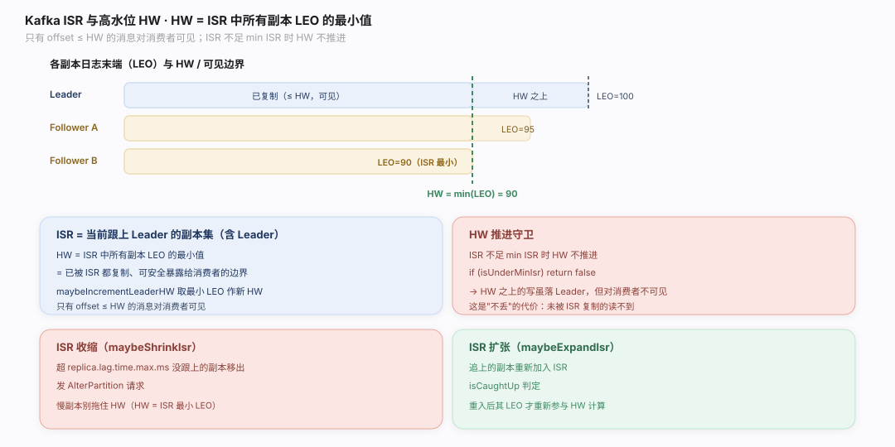
acks / min.insync · 不丢语义
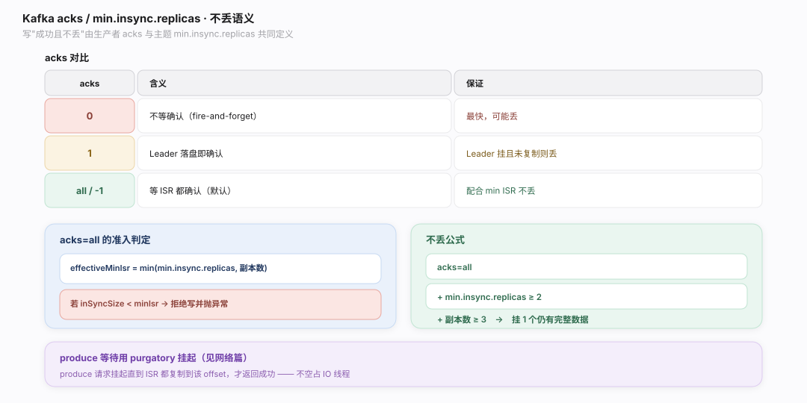
leader epoch 与截断
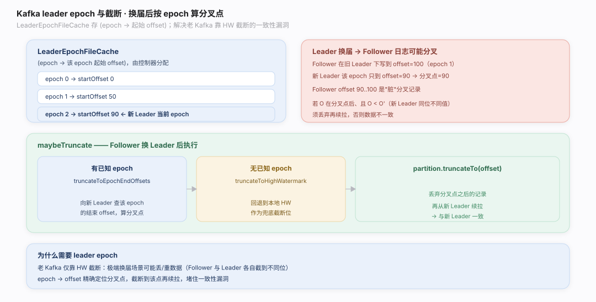
要点 · 定位 / 总纲 / 调优 / 误区 / 深化
定位属"容错能力域"。管数据不丢与高可用:Leader/Follower 复制、ISR(同步副本集)、高水位(HW)、
acks 与 min.insync.replicas、leader epoch 与截断。依赖【日志存储】的日志、被【生产/消费 API】的 acks 语义使用、副本变更元数据来自【KRaft】。源码基准 Kafka 4.4.0-SNAPSHOT(core/src/main/scala/kafka/cluster/Partition.scala、server/ReplicaManager.scala)。Kafka 靠副本 ISR 容错:每个 Partition 一个 Leader(读写)+ 若干 Follower(pull 复制),ISR=跟上进度的副本集,高水位 HW=ISR 中最小 LEO(=已复制、对消费者可见的边界,ISR 不足 min ISR 时不推进);不丢语义 = acks=all(等 ISR 确认)+ min.insync.replicas≥2 + 副本≥3;Leader 换届靠 leader epoch 记录 (epoch→offset),Follower 据此算分叉点截断再续拉,保证与新 Leader 一致。
调优要点 · 关键开关
- replication.factor:副本数;生产环境 ≥3 才容忍单机故障。
- min.insync.replicas:配合 acks=all;≥2 保证挂 1 个不丢。
- acks:不丢用 all;极致吞吐可 1(容忍少量丢)。
- replica.lag.time.max.ms:Follower 落后多久移出 ISR;太小频繁抖动、太大 HW 被慢副本拖住。
- unclean.leader.election.enable:默认 false(不选落后副本当 Leader,保一致);开则可用性优先但可能丢。
常见误区 · 工程要点
- 误区:副本数=3 就不丢。 还需 acks=all + min.insync.replicas≥2;否则 acks=1 时 Leader 挂仍丢。
- 误区:消费者能读到 Leader 最新写。 只能读到 ≤ HW 的;未被 ISR 复制的(HW 之上)不可见——这是不丢的代价。
- 误区:ISR 越大越好。 ISR 大则 HW 被最慢副本拖住(HW=ISR 最小 LEO);慢副本会被 replica.lag 移出。
- 误区:复制是 Leader 推。 是 Follower 主动拉(pull),简化流控。
- 归属提醒:被复制的日志在【日志存储】;produce 等 ISR 确认的挂起在【网络与请求处理】purgatory;副本分配/leader 选举元数据在【KRaft】;acks 语义在【生产/消费 API】。
深化 · 对比速查
| acks | 含义 | 保证 |
|---|---|---|
0 | 不等确认(fire-and-forget) | 最快,可能丢 |
1 | Leader 落盘即确认 | Leader 挂且未复制则丢 |
all/-1 | 等 ISR 都确认 | 配合 min ISR 不丢 |
| 结构 | 定义 | 职责 |
|---|---|---|
| ReplicaManager | server/ReplicaManager.scala:586 | 管本 Broker 所有分区副本读写 |
| Partition | cluster/Partition.scala:767 | 单分区:ISR/HW/复制状态 |
| ReplicaFetcherThread | server/ReplicaFetcherThread.scala:113 | Follower 拉取复制 |
| maybeIncrementLeaderHW | Partition.scala:1010 | HW 推进(ISR 最小 LEO) |
| LeaderEpochFileCache | storage/.../epoch/LeaderEpochFileCache.java:53 | epoch→offset,换届截断依据 |
组协调器 · 两层架构
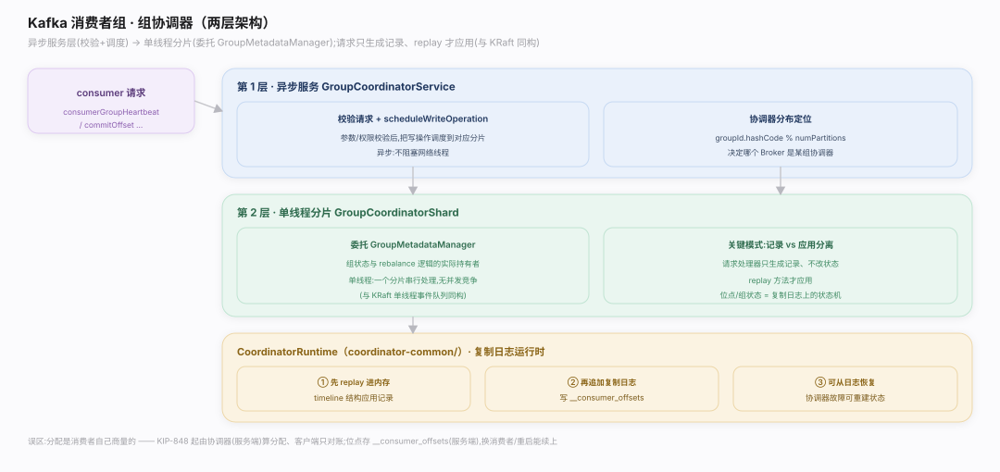
rebalance · KIP-848 服务端分配
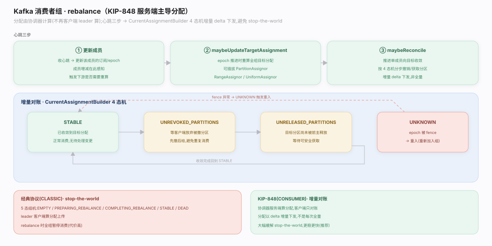
位点管理 · __consumer_offsets
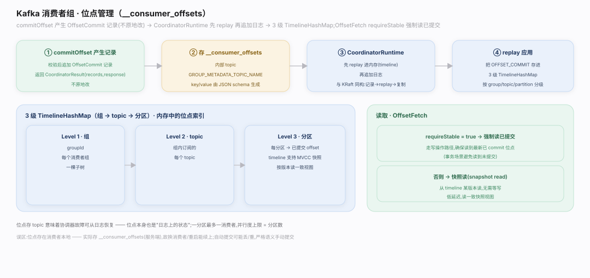
要点 · 定位 / 总纲 / 调优 / 误区 / 深化
定位属"协调能力域"。管消费的横向扩展与位点持久化:消费者组、rebalance(分区分配)、位点存储(
__consumer_offsets)。被【生产/消费 API】的 consumer 依赖、位点存进【日志存储】、组协调器由【KRaft】感知 Broker。源码基准 Kafka 4.4.0-SNAPSHOT(group-coordinator/src/main/java/org/apache/kafka/coordinator/group/)。Kafka 消费者组管消费的横向扩展与位点持久化:组协调器两层(异步服务 GroupCoordinatorService → 单线程分片,请求只生成记录、replay 才应用,与 KRaft 同构);KIP-848 起 rebalance 由协调器服务端算分配(RangeAssignor/UniformAssignor)、经 CurrentAssignmentBuilder 4 态机增量对账下发(避免 stop-the-world),位点提交产生 OffsetCommit 记录存进 __consumer_offsets topic(复制日志上的状态,可从故障恢复);一分区最多一消费者,并行度上限=分区数。
调优要点 · 关键开关
- group.protocol:CONSUMER(KIP-848,增量对账,推荐)vs CLASSIC(旧,stop-the-world)。
- partition.assignment.strategy / server-side assignor:Range(按 topic 连续分)/Uniform(均衡)。
- session.timeout.ms / heartbeat.interval.ms:成员存活判定;太短误判掉线频繁 rebalance。
- max.poll.interval.ms:处理超时会被踢出组;处理慢调大。
- __consumer_offsets 分区数/副本数:决定位点存储的并行与容错。
常见误区 · 工程要点
- 误区:组内消费者数 > 分区数更快。 多出的消费者空闲(一分区最多一消费者);并行度上限 = 分区数。
- 误区:rebalance 无代价。 经典协议 rebalance 是 stop-the-world(全组暂停);KIP-848 增量对账大幅缓解,但仍应避免频繁触发。
- 误区:位点存在消费者本地。 位点存
__consumer_offsetstopic(服务端),故换消费者/重启能续上。 - 误区:分配是消费者自己商量的。 KIP-848 起由协调器(服务端)算分配、客户端只对账;经典协议才是 leader 客户端算。
- 归属提醒:位点数据存【日志存储】的
__consumer_offsets;协调器所在 Broker 由【KRaft】元数据定;consumer poll/commit 入口在【生产/消费 API】。
深化 · 对比速查
| 结构 | 定义 | 职责 |
|---|---|---|
| GroupCoordinatorService | group/GroupCoordinatorService.java:519 | 异步服务层(校验+调度) |
| GroupCoordinatorShard | group/GroupCoordinatorShard.java:472 | 单线程分片(生成记录+replay) |
| GroupMetadataManager | group/GroupMetadataManager.java:2479 | 组状态与 rebalance 逻辑 |
| CurrentAssignmentBuilder | group/modern/consumer/CurrentAssignmentBuilder.java:187 | 增量对账 4 态机 |
| PartitionAssignor | group-coordinator-api/.../assignor/PartitionAssignor.java:39 | 分配策略 SPI(Range/Uniform) |
| OffsetMetadataManager | group/OffsetMetadataManager.java:620 | 位点提交/读取 |
KRaft 控制器 · 元数据即事件日志
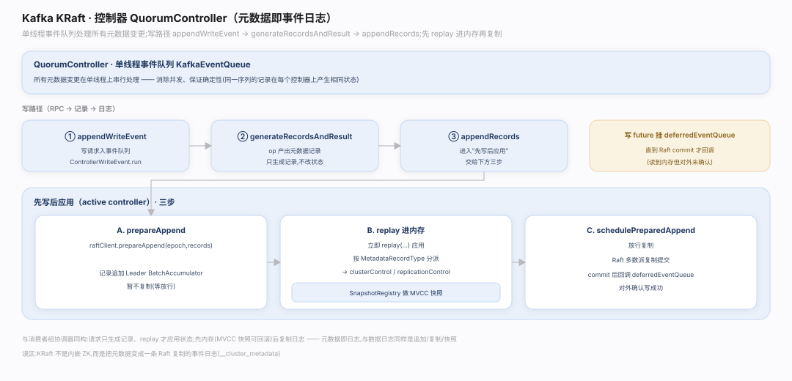
Raft 共识 · KafkaRaftClient
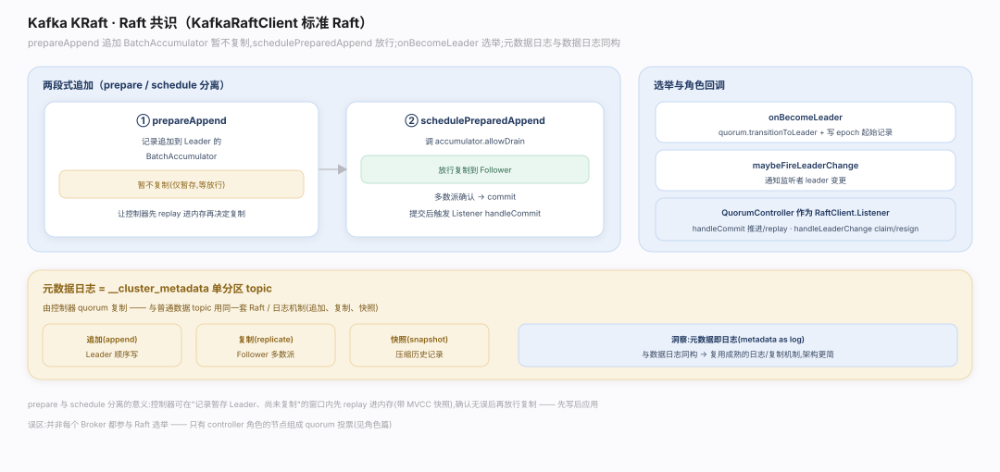
元数据传播 · 控制器→Broker
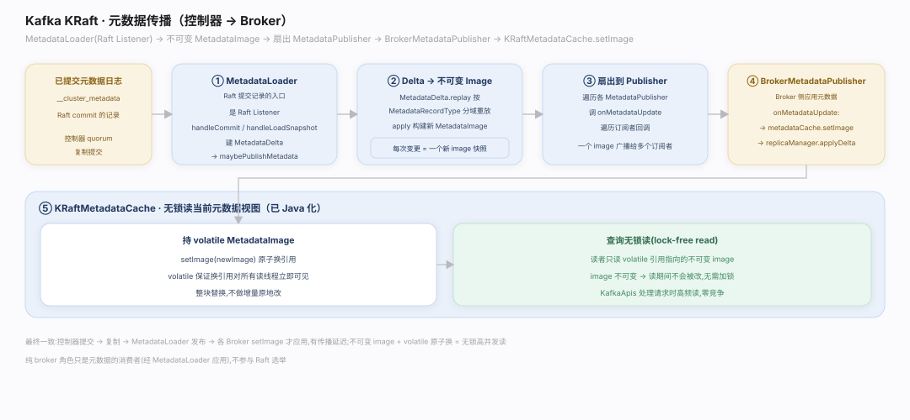
Broker 角色与 quorum
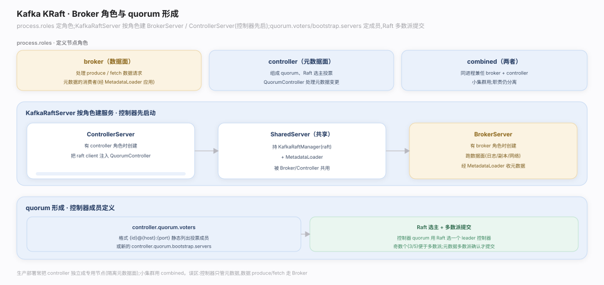
要点 · 定位 / 总纲 / 调优 / 误区 / 深化
定位属"元数据/共识能力域"——Kafka 4.x 的灵魂与最大变革。管集群元数据(topic/分区/leader/配置)的存储与传播:元数据本身是一条 Raft 复制的事件日志,由 QuorumController 单线程处理、经
__cluster_metadata 传播给所有 Broker。ZooKeeper 已彻底移除。 源码基准 Kafka 4.4.0-SNAPSHOT(metadata/.../controller/、raft/.../raft/)。KRaft 是 Kafka 4.x 用共识内建元数据管理、彻底取代 ZooKeeper 的方案:集群元数据(topic/分区/leader/配置)本身是一条 Raft 复制的事件日志(__cluster_metadata 单分区),QuorumController 单线程处理变更(先 prepareAppend+replay 进内存、再 schedulePreparedAppend 复制),经 MetadataLoader 把提交的记录构建成不可变 MetadataImage、扇出给各 Broker 的 KRaftMetadataCache 无锁应用;process.roles 分 broker/controller 角色,controller quorum 用 Raft 选主提交——核心洞察是"元数据即日志",与数据日志同构。
调优要点 · 关键开关
- process.roles:生产环境控制器独立(隔离元数据面);小集群 combined。
- controller.quorum.voters / bootstrap.servers:控制器成员;奇数个(3/5)便于多数派。
- metadata.log.*:元数据日志的段/快照参数,类比数据日志。
- 迁移:从 ZK 版升级需 ZK→KRaft 迁移;4.x 起纯 KRaft、无 ZK 回退。
常见误区 · 工程要点
- 误区:KRaft 只是把 ZK 内嵌。 不。元数据变成一条 Raft 复制的事件日志(与数据日志同构),不是内嵌一个 ZK;架构上更简、扩展性更好。
- 误区:控制器处理数据请求。 控制器只管元数据;数据 produce/fetch 走 Broker。combined 模式下同进程但职责分离。
- 误区:每个 Broker 都参与 Raft 选举。 只有 controller 角色的节点组成 quorum 投票;纯 broker 角色只是元数据的消费者(经 MetadataLoader 应用)。
- 误区:元数据变更立即全局生效。 控制器提交后经
__cluster_metadata复制、MetadataLoader 发布、各 BrokersetImage才应用——有传播延迟(最终一致)。 - 归属提醒:元数据日志复用【日志存储】机制;Raft 复制类比【副本与 ISR】但用于元数据;Broker 应用元数据后驱动【副本与 ISR】的分区 leader 分配。
深化 · 对比速查
| 结构 | 定义 | 职责 |
|---|---|---|
| QuorumController | controller/QuorumController.java:1365 | 单线程处理元数据变更 |
| KafkaRaftClient | raft/.../raft/KafkaRaftClient.java | Raft 共识(选举/复制/提交) |
| MetadataLoader | image/loader/MetadataLoader.java:76 | Raft Listener,建 delta 发布 |
| MetadataImage / Delta | image/MetadataDelta.java:194 | 不可变元数据快照 + 增量 |
| KRaftMetadataCache | metadata/.../metadata/KRaftMetadataCache.java:65 | Broker 侧无锁元数据视图 |
| controller.quorum.* | raft/.../raft/QuorumConfig.java:58 | 控制器 quorum 成员定义 |
Reactor 线程模型
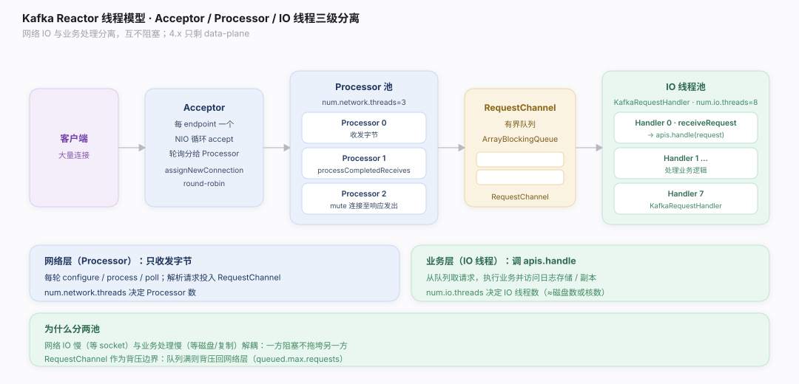
KafkaApis 请求分派
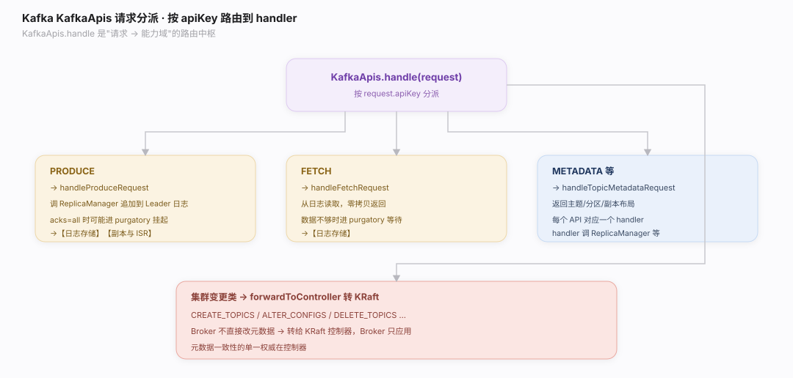
Purgatory 延迟操作
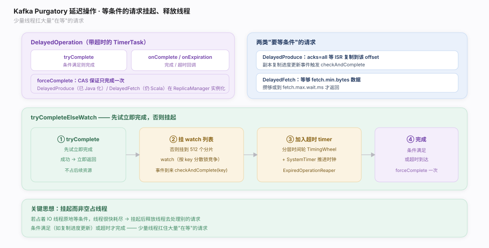
要点 · 定位 / 总纲 / 调优 / 误区 / 深化
定位属"通信能力域"。管 Broker 如何收发请求:SocketServer 的 Acceptor/Processor 线程、KafkaApis 请求分派、purgatory 延迟操作(等 ISR 复制/等 fetch 数据)。承载【生产/消费 API】的请求、驱动【日志存储】追加与读取。源码基准 Kafka 4.4.0-SNAPSHOT(
core/src/main/scala/kafka/network/、server/)。Kafka Broker 用 Reactor 线程模型 + purgatory 扛高并发:Acceptor 接连接轮询分给 Processor(num.network.threads,只收发字节)、经 RequestChannel 交给 IO 线程(num.io.threads,调 KafkaApis.handle 按 apiKey 分派,元数据变更 forwardToController 转 KRaft);要等条件的请求(acks=all 等 ISR 复制、fetch 等够数据)进 DelayedOperationPurgatory 挂起(分层时间轮超时、事件到来 checkAndComplete),释放线程——少量线程扛大量在等的请求。
调优要点 · 关键开关
- num.network.threads(默认 3):Processor 数;高连接数调大。
- num.io.threads(默认 8):IO 线程数;高请求量调大(≈磁盘数或核数)。
- queued.max.requests:RequestChannel 队列深度;满则背压到网络层。
- fetch.min.bytes / fetch.max.wait.ms:fetch 攒够多少或等多久(purgatory 延迟),攒批降请求数。
- socket.request.max.bytes:单请求上限,防超大请求打爆。
常见误区 · 工程要点
- 误区:一个请求占一个线程直到完成。 acks=all/fetch 等待的请求进 purgatory 挂起、释放线程,不空占。
- 误区:Broker 自己改元数据。 元数据变更 forwardToController 转给 KRaft 控制器;Broker 只应用。
- 误区:网络线程也处理业务。 网络线程(Processor)只收发字节;业务在 IO 线程(KafkaRequestHandler);两池分离。
- 误区:控制平面还有独立网络路径。 4.x 已移除,SocketServer 只剩 data-plane。
- 归属提醒:请求最终调【日志存储】追加/读、【副本与 ISR】复制;元数据请求转【KRaft】;purgatory 的 produce 完成条件是 ISR 复制到位(【副本与 ISR】)。
深化 · 对比速查
| 结构 | 定义 | 职责 |
|---|---|---|
| SocketServer / Acceptor / Processor | network/SocketServer.scala:461 | Reactor 收发线程 |
| RequestChannel | network/RequestChannel.scala:50 | 请求队列(Processor↔IO 线程) |
| KafkaRequestHandler | server/KafkaRequestHandler.scala:108 | IO 线程,调 apis.handle |
| KafkaApis.handle | server/KafkaApis.scala:157 | 按 apiKey 分派 |
| DelayedOperationPurgatory | server-common/.../purgatory/DelayedOperationPurgatory.java:38 | 延迟操作挂起/完成 |
| TimingWheel / SystemTimer | server-common/.../util/timer/ | 分层时间轮超时 |
幂等生产者 · PID+序列号
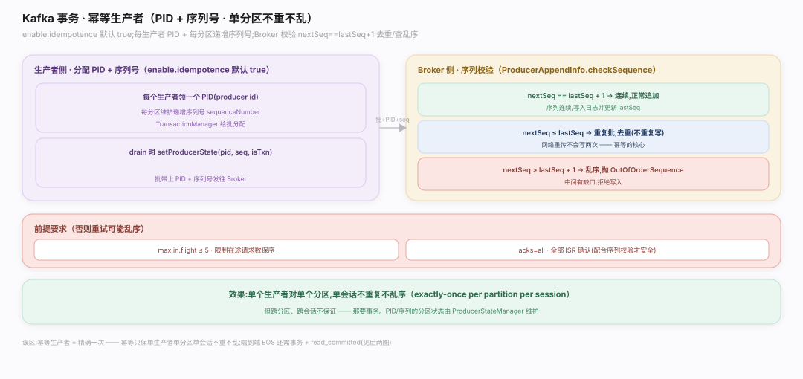
事务 · 跨分区原子写
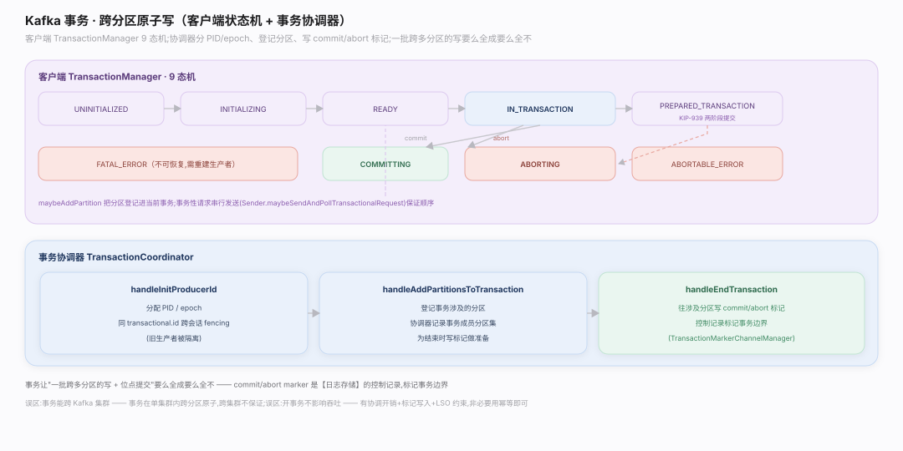
read_committed · 只读已提交
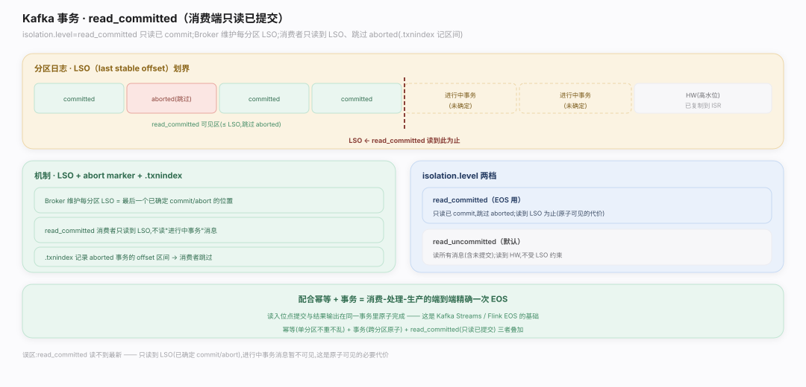
要点 · 定位 / 总纲 / 调优 / 误区 / 深化
定位属"一致性能力域"。管精确一次(EOS)的两块基石:幂等生产者(PID + 序列号,单分区不重不乱)与事务(跨分区原子写 + 消费-处理-生产原子性)。依赖【日志存储】写事务标记、【副本与 ISR】的 acks=all、被【生产/消费 API】的 EOS 语义使用。源码基准 Kafka 4.4.0-SNAPSHOT(
clients/.../producer/internals/TransactionManager.java、core/.../coordinator/transaction/)。Kafka 精确一次分两层:幂等生产者(默认开,每生产者领 PID + 每分区递增序列号,Broker 校验 nextSeq==lastSeq+1 去重、乱序抛 OutOfOrderSequence,要求 max.in.flight≤5 + acks=all)保单分区单会话不重不乱;事务(TransactionManager 9 态机 + TransactionCoordinator 分配 PID/写 commit-abort 标记)保跨分区原子写,消费端 read_committed 只读到 LSO(已确定的 commit/abort)、跳过 aborted——两者叠加实现消费-处理-生产的端到端 EOS(Kafka Streams/Flink 的基础)。
调优要点 · 关键开关
- enable.idempotence(默认 true):单分区不重不乱;关掉退回可能重复。
- transactional.id:开事务必设;同 id 跨会话保证 fencing(旧生产者被隔离)。
- max.in.flight.requests.per.connection ≤ 5:幂等/事务下保序的前提。
- isolation.level:EOS 消费用 read_committed;默认 read_uncommitted 读所有(含未提交)。
- transaction.timeout.ms:事务超时未提交则 abort。
常见误区 · 工程要点
- 误区:幂等生产者 = 精确一次。 幂等只保单生产者单分区单会话不重不乱;端到端 EOS 还需事务 + read_committed。
- 误区:事务能跨 Kafka 集群。 事务在单集群内跨分区原子;跨集群不保证。
- 误区:read_committed 读不到最新。 只读到 LSO(已确定 commit/abort);进行中事务的消息暂不可见——这是原子可见的代价。
- 误区:开事务不影响吞吐。 事务有协调开销 + 标记写入 + LSO 约束;非必要 EOS 场景用幂等即可。
- 归属提醒:PID/序列的分区状态在【日志存储】的 ProducerStateManager;commit/abort 标记是【日志存储】的控制记录;acks=all 依赖【副本与 ISR】;EOS 消费语义在【生产/消费 API】。
深化 · 对比速查
| 结构 | 定义 | 职责 |
|---|---|---|
| TransactionManager | producer/internals/TransactionManager.java:157 | 客户端事务/序列状态机 |
| ProducerAppendInfo.checkSequence | storage/.../log/ProducerAppendInfo.java:156 | Broker 序列校验去重 |
| ProducerStateManager | storage/.../log/ProducerStateManager.java:70 | 分区级 PID/序列状态 |
| TransactionCoordinator | coordinator/transaction/TransactionCoordinator.scala:118 | 事务协调(PID/标记) |
| TransactionMarkerChannelManager | coordinator/transaction/TransactionMarkerChannelManager.scala | 写 commit/abort 标记 |
双维模型 · 能力域 × 执行时机
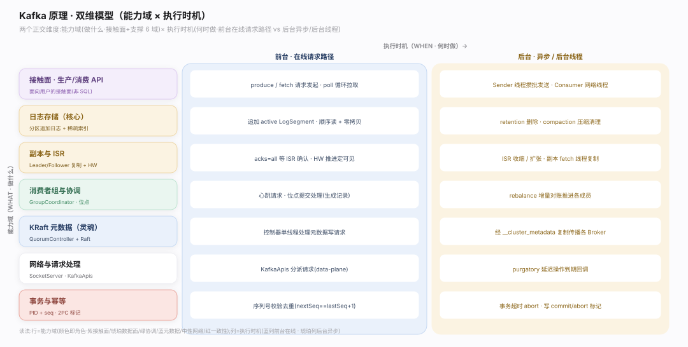
总架构图 · Broker 数据面 + KRaft 元数据面
依赖矩阵 · 接触面 × 能力域
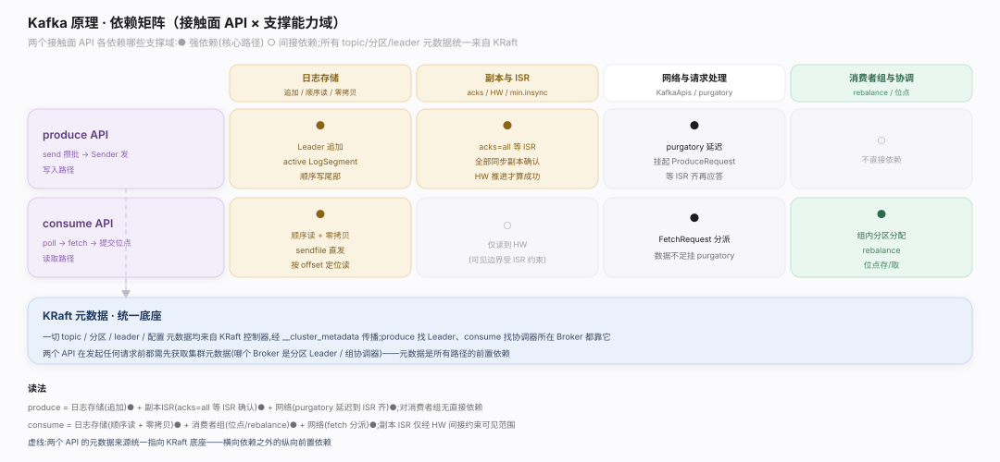
能力域依赖关系图
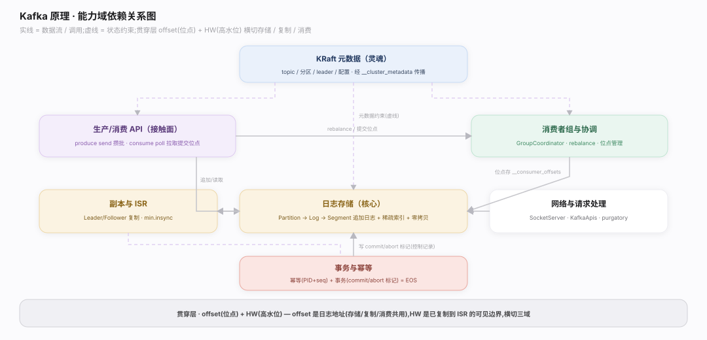